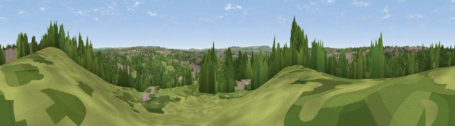

Viewpoint near Harry Stoke
#28947 in England · top 54% of its area beats it · near Harry StokeThe view, rendered

A 360° render of this exact spot computed from the terrain model, tree cover and land cover — summer colours, afternoon light, calibrated against photographs of famous viewpoints. Real trees, hedges and buildings will differ in detail.
The panorama
Grey silhouette: terrain skyline in each direction (720 bearings, Earth curvature and refraction included). Dashed green: skyline with trees (+15 m) and buildings (+8 m) as obstacles. Blue strip: how far the ground is visible on each bearing.
Where the view opens
Wedge length = distance to the farthest visible ground on that bearing (vegetation-aware). Rings at 10, 25 and 50 km.
What fills the view
44% built-up · 37% woodland · 17% grassland · 1% cropland
Angular shares of the visible panorama (visual magnitude), not map area. Landscape diversity 0.48 (0–1 Shannon).
Key numbers
More beautiful places nearby
The staircase of upgrades: each row has a higher view potential than everything closer. Driving times are estimates from straight-line distance, calibrated against real road routing — check an actual route before setting out.
| Place | Direction | Drive | Score |
|---|---|---|---|
| Viewpoint near Harry Stoke | NE · 1 km | ~2 min | 54.6 |
| Viewpoint near Hallen | WNW · 5 km | ~12 min | 55.0 |
| Viewpoint near Hallen | WNW · 6 km | ~12 min | 62.8 |
| Viewpoint near Hallen | WNW · 6 km | ~13 min | 66.7 |
| Viewpoint near Almondsbury | N · 7 km | ~15 min | 68.3 |
| Viewpoint near Norton Malreward | S · 10 km | ~19 min | 72.9 |
| Hanging Hill | ESE · 12 km | ~22 min | 76.4 |
| Beacon Batch | SSW · 22 km | ~37 min | 79.4 |
51.48181, -2.56697 · source: screening · position refined by local search. Computed location — check access rights before visiting.